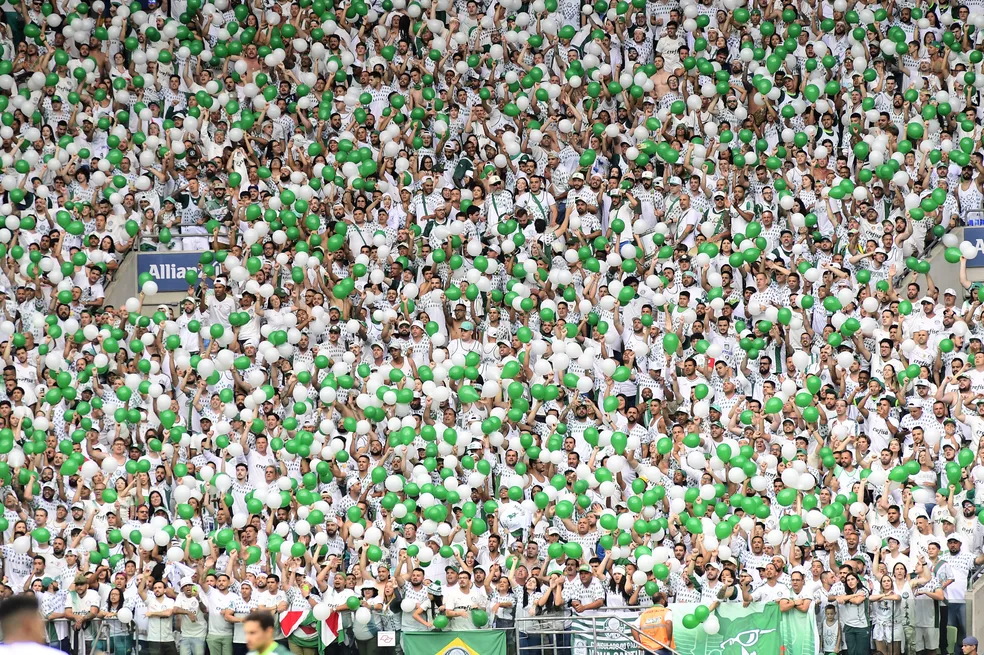
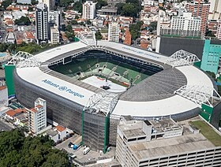
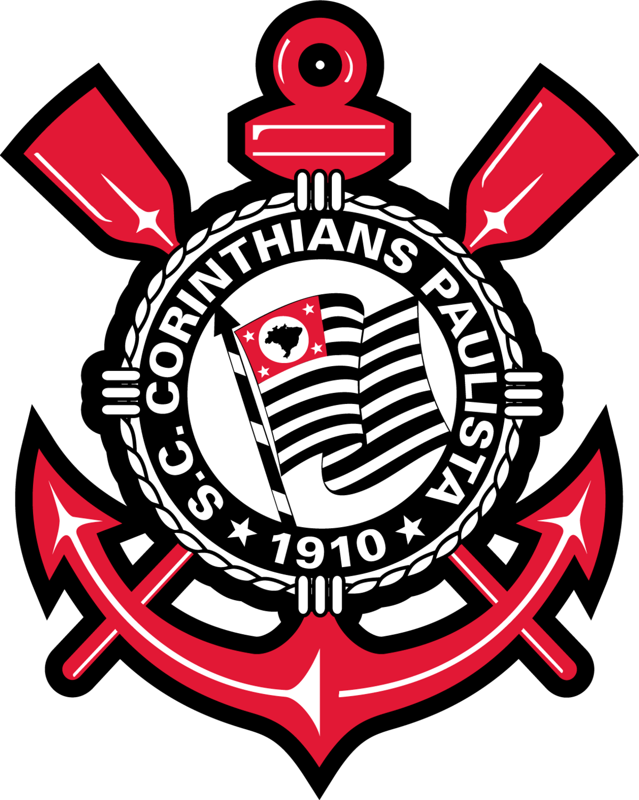
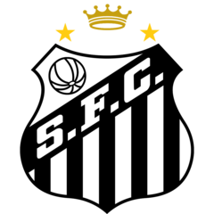

O Sociedade Esportiva Palmeiras, conhecido simplesmente como Palmeiras, foi fundado em
26 de agosto de 1914, por imigrantes italianos em São Paulo. Originalmente chamado de
Palestra Italia, o clube rapidamente se destacou no cenário esportivo, conquistando seu
primeiro Campeonato Paulista em 1920. Durante as décadas seguintes, o Palmeiras se tornou
um dos clubes mais vitoriosos do Brasil, acumulando títulos e consolidando sua reputação.
Em 1942, durante a Segunda Guerra Mundial, o clube trocou seu nome para Palmeiras devido
à pressão política da época. A partir de então, o Palmeiras se consolidou como uma das
principais forças do futebol brasileiro, sendo o primeiro clube do país a conquistar a Copa
Rio Internacional em 1951, um dos primeiros torneios internacionais.
Na década de 1970, o clube viveu uma fase áurea, conquistando diversos títulos nacionais e
internacionais, incluindo o famoso "Esquadrão Imortal". Nos anos 1990, o Palmeiras se
destacou novamente, ganhando o Campeonato Brasileiro em 1993 e 1994, e a Copa do Brasil
em 1998.
Curiosidades:
Maior Torcida: O Palmeiras possui uma grande torcida no Brasil,
liderada pela principal torcida organizada Chamada de "Mancha verde".

Estádio Allianz Parque:
O clube manda seus jogos no Allianz Parque, inaugurado em 2014. O
estádio é um dos mais modernos do Brasil e se destaca por sua infraestrutura e por receber
eventos variados além do futebol

Rivalidade Histórica:
O Palmeiras tem uma rivalidade intensa com o Corinthians, Santos e Sao Paulo,
que é um dos maiores clássicos do futebol brasileiro. Esses jogos são
sempre emocionantes e têm um significado especial para ambas as torcidas.

